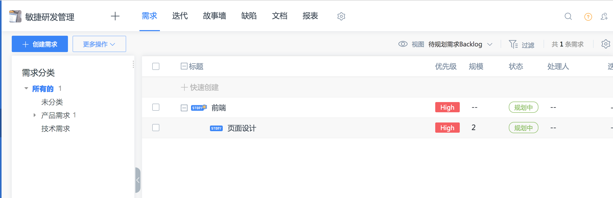
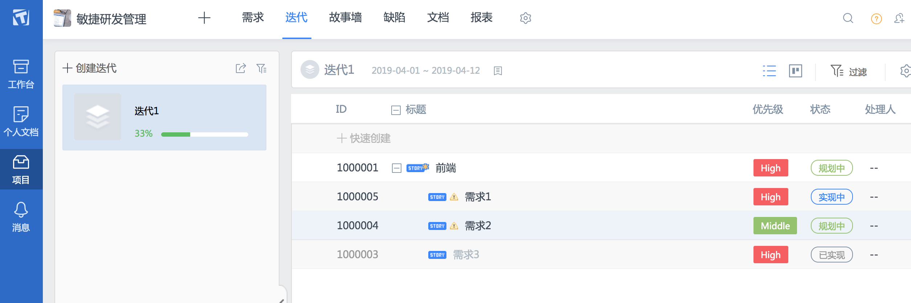
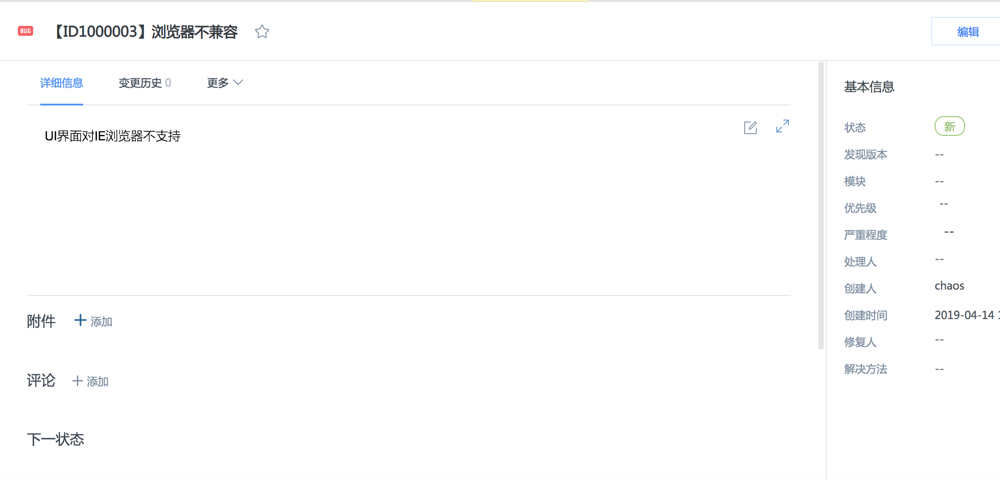
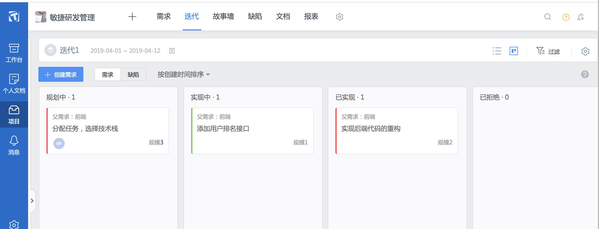
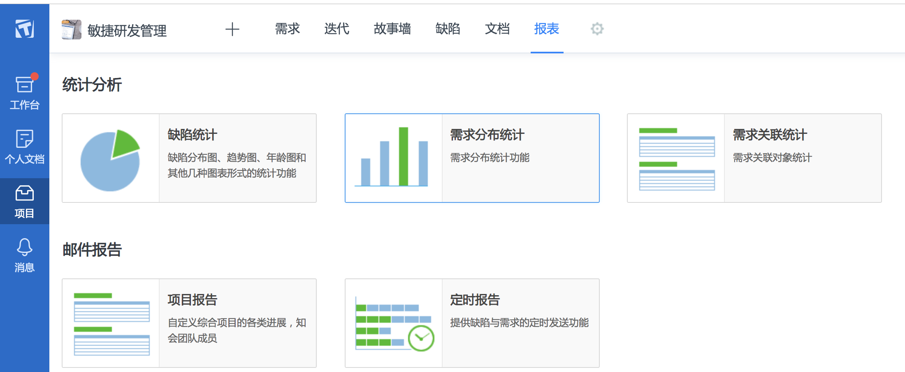

简述瀑布模型、增量模型、螺旋模型（含原型方法），并分析优缺点
瀑布模型
简述
瀑布模型将软体生命周期划分为制定计划、需求分析、软体设计、程式编写、软体测试和运行维护等六个基本活动，并且规定了它们自上而下、相互衔接的固定次序，如同瀑布流水，逐级下落。从本质来讲，它是一个软体开发架构，开发过程是通过一系列阶段顺序展开的，从系统需求分析开始直到产品发布和维护，每个阶段都会产生回圈反馈，因此，如果有信息未被覆盖或者发现了问题，那么最好“返回”上一个阶段并进行适当的修改，开发进程从一个阶段“流动”到下一个阶段，这也是瀑布开发名称的由来。
优点
- 为项目提供了按阶段划分的检查点。
- 当前一阶段完成后，您只需要去关注后续阶段。
- 可在迭代模型中应用瀑布模型。
缺点
在项目各个阶段之间极少有反馈。
只有在项目生命周期的后期才能看到结果。
通过过多的强制完成日期和里程碑来跟踪各个项目阶段。
增量模型
简述
增量模型融合了瀑布模型的基本成分（重覆应用）和原型实现的迭代特征，该模型采用随着日程时间的进展而交错的线性序列，每一个线性序列产生软体的一个可发布的“增量”。当使用增量模型时，第1个增量往往是核心的产品，即第1个增量实现了基本的需求，但很多补充的特征还没有发布。客户对每一个增量的使用和评估都作为下一个增量发布的新特征和功能，这个过程在每一个增量发布后不断重覆，直到产生了最终的完善产品。
优点
- 人员分配灵活，刚开始不用投入大量人力资源。如果核心产品很受欢迎，则可增加人力实现下一个增量。
- 当配备的人员不能在设定的期限内完成产品时，它提供了一种先推出核心产品的途径。这样即可先发布部分功能给客户，对客户起到镇静剂的作用。此外，增量能够有计划地管理技术风险。
缺点
- 由于各个构件是逐渐并入已有的软体体系结构中的，所以加入构件必须不破坏已构造好的系统部分，这需要软体具备开放式的体系结构。
- 在开发过程中，需求的变化是不可避免的。增量模型的灵活性可以使其适应这种变化的能力大大优于瀑布模型和快速原型模型，但也很容易退化为边做边改模型，从而是软体过程的控制失去整体性。
- 如果增量包之间存在相交的情况且未很好处理，则必须做全盘系统分析，这种模型将功能细化后分别开发的方法较适应于需求经常改变的软体开发过程。
螺旋模型
简述
螺旋模型基本做法是在“瀑布模型”的每一个开发阶段前引入一个非常严格的风险识别、风险分析和风险控制，它把软体项目分解成一个个小项目。每个小项目都标识一个或多个主要风险，直到所有的主要风险因素都被确定。
螺旋模型强调风险分析，使得开发人员和用户对每个演化层出现的风险有所了解，继而做出应有的反应，因此特别适用于庞大、复杂并具有高风险的系统。对于这些系统，风险是软体开发不可忽视且潜在的不利因素，它可能在不同程度上损害软体开发过程，影响软体产品的质量。减小软体风险的目标是在造成危害之前，及时对风险进行识别及分析，决定采取何种对策，进而消除或减少风险的损害。
优点
- 设计上的灵活性,可以在项目的各个阶段进行变更。
- 以小的分段来构建大型系统,使成本计算变得简单容易。
- 客户始终参与每个阶段的开发,保证了项目不偏离正确方向以及项目的可控性。
- 随着项目推进,客户始终掌握项目的最新信息, 从而他或她能够和管理层有效地交互。
- 客户认可这种公司内部的开发方式带来的良好的沟通和高质量的产品。
缺点
- 采用螺旋模型需要具有相当丰富的风险评估经验和专门知识，在风险较大的项目开发中，如果未能够及时标识风险，势必造成重大损失。
- 过多的迭代次数会增加开发成本，延迟提交时间。
简述统一过程三大特点，与面向对象的方法有什么关系？
首先统一过程的三大特点分别是用例驱动，架构为核心，采用迭代和增量模型。
用例驱动
所有的用户和用例组合在一起就是用例模型，它描述了系统的全部功能。用例图促使我们从系统对用户的价值方面来考虑问题，是站在用户的角度出发，以人为本。并且用例图不仅能确定用户的需求，还可以驱动系统设计、实现和测试的进行，也就是说用例可以驱动开发过程。用例驱动表明开发过程是沿着一个流——一系列从用例得到的工作流前进的：用例被确定、用例被设计、最后用例又称为测试人员构造测试用例的基础。
架构为核心
架构师一个小的系统，它实现了用户的核心需求，包括了系统中最重要的静态的动态特征。构架刻画了系统的整体设计，它舍弃了细节部分，突出了系统的重要特征。统一软件过程提供了创建构架的相应方法和过程，可以帮助分析人员和设计人员很好地完成架构的设计。
采用迭代和增量模型
统一软件过程采用迭代和增量的开发方式，把一个软件产品划分成多个较小的部分，每一次完成一个部分，每次要迭代部分是产品的一个增量部分。每个增量部分的生产过程是受控的。
与面向对象方法的关系
统一软件过程是一个面向对象且基于网络的程序开发方法论
简述统一过程四个阶段的划分准则是什么？每个阶段关键的里程碑是什么？
各阶段介绍以及划分准则
RUP中的软件生命周期在时间上被分解为四个顺序的阶段，分别是：初始阶段（Inception）、细化阶段（Elaboration）、构造阶段（Construction）和交付阶段（Transition）。每个阶段结束于一个主要的里程碑（Major Milestones）；每个阶段本质上是两个里程碑之间的时间跨度。在每个阶段的结尾执行一次评估以确定这个阶段的目标是否已经满足。如果评估结果令人满意的话，可以允许项目进入下一个阶段。
初始阶段
初始阶段的目标是为系统建立商业案例并确定项目的边界。为了达到该目的必须识别所有与系统交互的外部实体，在较高层次上定义交互的特性。本阶段具有非常重要的意义，在这个阶段中所关注的是整个项目进行中的业务和需求方面的主要风险。对于建立在原有系统基础上的开发项目来讲，初始阶段可能很短。初始阶段结束时是第一个重要的里程碑：生命周期目标里程碑。生命周期目标里程碑评价项目基本的生存能力。
细化阶段
细化阶段的目标是分析问题领域，建立健全的体系结构基础，编制项目计划，淘汰项目中最高风险的元素。为了达到该目的，必须在理解整个系统的基础上，对体系结构作出决策，包括其范围、主要功能和诸如性能等非功能需求。同时为项目建立支持环境，包括创建开发案例，创建模板、准则并准备工具。细化阶段结束时第二个重要的里程碑：生命周期结构里程碑。生命周期结构里程碑为系统的结构建立了管理基准并使项目小组能够在构建阶段中进行衡量。此刻，要检验详细的系统目标和范围、结构的选择以及主要风险的解决方案。
构造阶段
在构建阶段，所有剩余的构件和应用程序功能被开发并集成为产品，所有的功能被详细测试。从某种意义上说，构建阶段是一个制造过程，其重点放在管理资源及控制运作以优化成本、进度和质量。构建阶段结束时是第三个重要的里程碑：初始功能里程碑。初始功能里程碑决定了产品是否可以在测试环境中进行部署。此刻，要确定软件、环境、用户是否可以开始系统的运作。此时的产品版本也常被称为“beta”版。
交付阶段
交付阶段的重点是确保软件对最终用户是可用的。交付阶段可以跨越几次迭代，包括为发布做准备的产品测试，基于用户反馈的少量的调整。在生命周期的这一点上，用户反馈应主要集中在产品调整，设置、安装和可用性问题，所有主要的结构问题应该已经在项目生命周期的早期阶段解决了。在交付阶段的终点是第四个里程碑：产品发布里程碑。此时，要确定目标是否实现，是否应该开始另一个开发周期。在一些情况下这个里程碑可能与下一个周期的初始阶段的结束重合。
软件企业为什么能按固定节奏生产、固定周期发布软件产品？它给企业项目管理带来哪些好处？
统一过程模型中，各个阶段的生命周期是有固定长度的，在固定的周期内，所要完成的科目也是有明确的规范的， 因此在产品的的迭代开发过程有较为明确的时间限制的，企业能够按照统一过程的标准，按固定周期完成产品的生产和发布。
此时，根据固定周期的开发任务以及阶段，企业可以更加便利地掌控开发进度以及控制预算， 对产品的质量和生产开发过程都能进行较为精准的把控，方便企业根据实际情况做出调整，规范管理，从而尽可能达到最大的收益。
TAPD使用
Backlog
定义
首先需求Backlog是产品待实现的需求列表,Backlog中的需求按照对用户的价值排序。
界面

这里我们可以看到需求列表成一个树状结构，在这里我们可以根据自己的实际需求创建需求并呈现出想要的结构。
迭代安排
定义
迭代是指把一个复杂且开发周期很长的开发任务，分解为很多小周期可完成的任务，这样的一个周期就是一次迭代的过程；同时每一次迭代都可以生产或开发出一个可以交付的软件产品。
界面

在这里，每一次迭代会被创造，然后会记录在每一次迭代的进度。在这里可以为迭代制定明确的目标，确定迭代的开始和结束时间。
较好的缺陷管理
研发过程中，测试工程师使用缺陷进行缺陷管理。开发工程师完成需求开发后，测试工程师跟进测试。
测试工程师首先根据需求罗列出测试重点，然后根据测试重点进行测试。测试过程中发现了Bug，便会填写缺陷单，并分配给需求开发人。
这里随便新建了一个缺陷如下所示：

缺陷单包含了Bug的重现规则、关联需求、优先级和紧急程度等信息。
开发工程师修复Bug后，将缺陷单状态设置为已解决，此时缺陷单流转回测试工程师手中。测试工程师验证Bug已正确修复后，将缺陷单关闭，否则打回给开发工程师。整个过程可重复进行，直至Bug被正确修复。
kanban
在kanban这里有4栏，分别是规划中、实现中、已实现和已拒绝。

这里可以实现可视化多人协作，而且有各种专业的模版。
统计
在报表这里我们可以看到这里有5个大模块。而且统计模块除了提供缺陷统计、需求分布统计、进度跟踪、工时花费报告、需求关联统计等丰富的内置报表外，同时也支持通过报表自定义，灵活定制团队专属统计报表。

项目经理可以将统计报表作为邮件内容，创建定时报告发送给团队成员，方便所有团队成员关注开发质量。


评论加载中